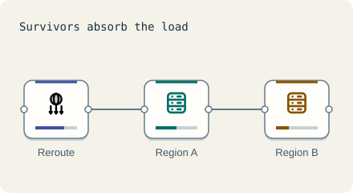

Stay up · 4 minutes
Surviving a region
A whole region can go dark. Run in two, and send people to the one that is up.
Open this lesson
Zones and regions
A zone is one data centre building; a region is a city-sized group of zones. Spreading over zones survives a fire in one building. A whole region can still fail, which is rare (a few hours a year at most, approx.) but real. Surviving it means a second region with its own copy of the data.
The price
A standby can take over only with an ownership decision. Asynchronous writes that never reached it remain a recovery gap.
Try the idea
The whole home region will go down at noon. Keep a second region ready and send traffic to it.
Key numbers
- Round trip between regions
- ≈ 80 ms. US to Europe, approx.
- Cost of a second full region
- ≈ 2x. approx.
- Moving traffic away from a dead region
- ≈ 1 to 5 minutes. DNS and health checks, approx.
Check your reasoning
Think through these questions before opening the lesson. In the game you can test the idea and compare your reasoning.
- Zones protect against:
- What must a second region have to be useful?
- Why is writing in two regions hard?
The key point
Multiple regions buy survival at the price of cost and harder data.
Practise this idea
- Hard
Bank ledger
You run the system of record for a regional bank: every deposit, withdrawal and card settlement is a posting that must be exact and permanent. Customers in two continents read balances all day, and regulators can ask for proof at any time. A bad day for you is a loss of even one posting.
- Medium
Patient health records
A hospital network keeps patient charts, orders, notes and scanned documents for 40 hospitals. Doctors need a chart in under a second, no saved note may be lost when a server or a building fails (in a whole-region disaster, at most the last minute of edits may need re-entering from the ward), and an auditor can walk in any day and ask you to prove who looked at what.
- Medium
Telehealth video visits
Patients join a video visit with a doctor from their phone. Most calls go straight between the two people, but the platform runs the waiting room, chat, sign-in, the join link and a relay for the calls that cannot connect directly. A bad minute here means a patient staring at a spinner.
- Medium
Online exam
A national board runs a two-hour online exam for 200,000 students in three regions at the same time. Answers save automatically every half minute, a live heartbeat shows the student is still there, and proctoring marks suspicious events. Every saved answer matters. A minute of outage at the wrong time is a national story.